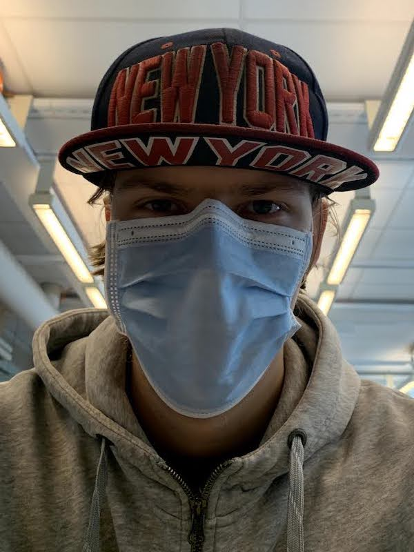

Itsensä esittely

Olen Valtteri Huuskonen.
Minua kiinnostaa teknologia ja kun lukion jälkeen piti jonnekin mennä
opiskelemaan, niin päätin tulla Tamkiin titelle, koska se oli ainut
järkevä vaihtoehto. Unix on ollut käytössä jo kymmenen vuotta.
Vapaa-ajalla teen esimerkiksi omia projekteja, selaan nettiä esim. luen
HN tai katson videoita
YouTubesta.
Tavoitteitani IT-alalla on harjoittaa nykyistä osaamistani ja oppia uutta.